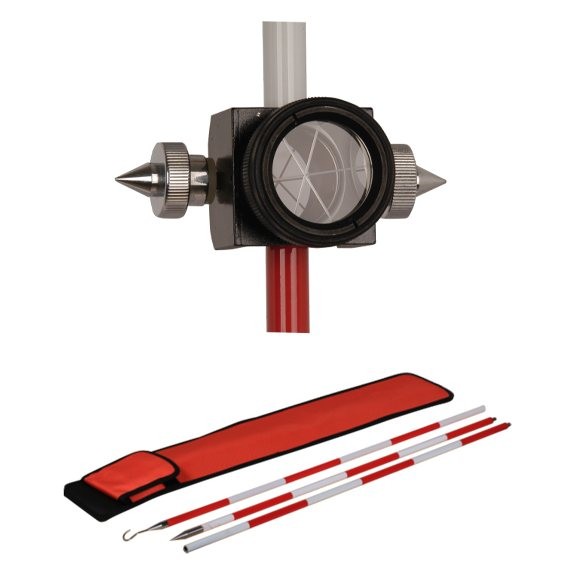
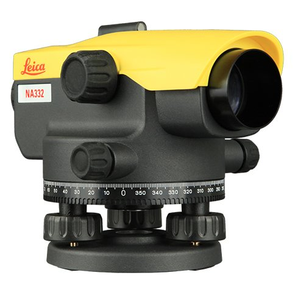
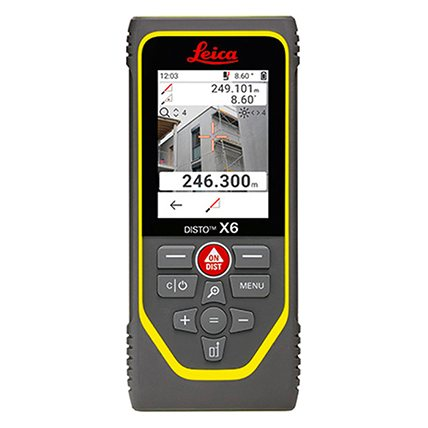
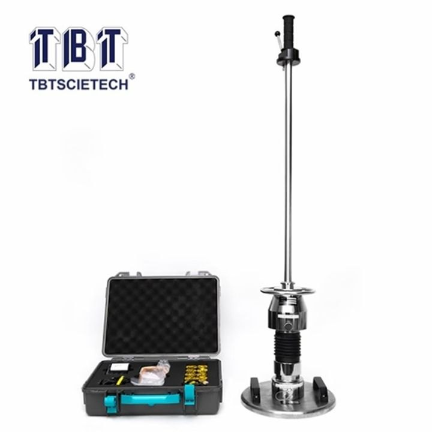
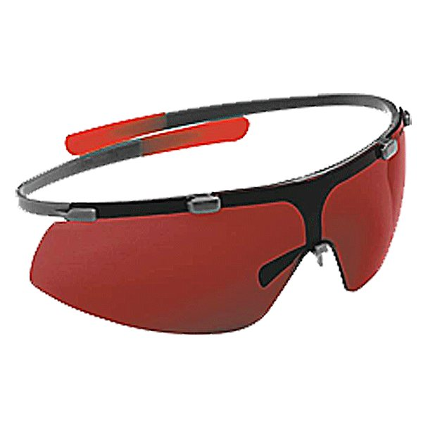
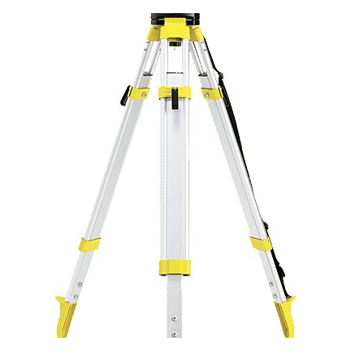
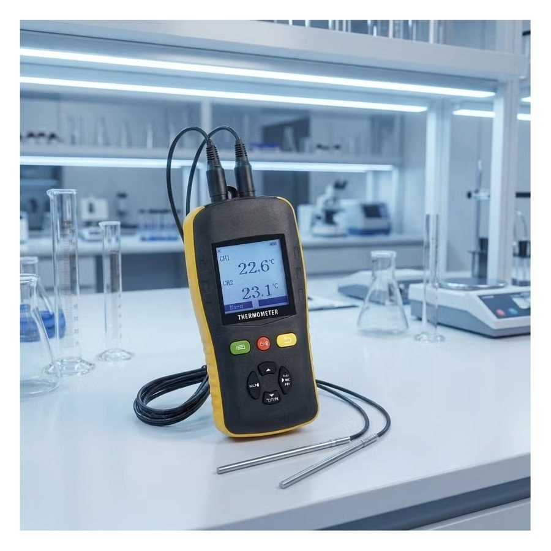
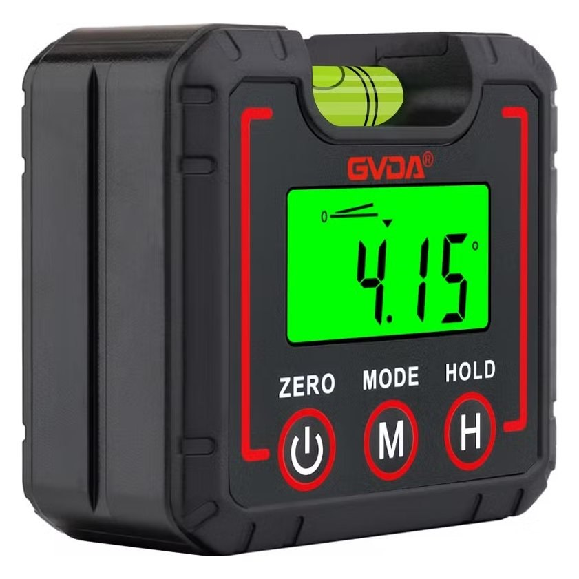

Illustration similar – shows the product type.
GNSS RTK receiver with tilt sensor (rover, multi-constellation)
Compact RTK rover with integrated IMU for setting-out, topographic survey and control measurements without a total station set-up.
An integrated tilt sensor (IMU) allows measuring with a tilted pole, for example at building corners or manhole covers, and the IP67 housing weighing about 800 g withstands dust, rain and a full survey day. Professional users in Germany expect NTRIP access to SAPOS or comparable correction services, a field test report to ISO 17123-8 and CE conformity under the Radio Equipment Directive, because readings are only reliable for acceptance and as-built records with these proofs.
Technical data
| GNSS constellations | Multi-constellation (GPS, GLONASS, BeiDou, Galileo) |
|---|---|
| Channels | 800 |
| Tilt measurement | Integrated 9-axis IMU, up to approx.; 30° tilt |
| Protection rating | IP67 |
| Communication | Integrated 4G modem, Bluetooth |
| Weight | approx.; 800 g |
| Correction data | NTRIP (e.g.; SAPOS) or base-rover radio |
| Customs tariff number (HS) | 90158040 |
EU standards and regulations
RED 2014/53/EURadio Equipment Directive (CE marking for 4G, Bluetooth, UHF)ISO 17123-8Optics and optical instruments – Field procedures for testing geodetic and surveying instruments – Part 8: GNSS field measurement systems in real-time kinematic (RTK)EN 60529Degrees of protection provided by enclosures (IP code)RoHS 2011/65/EURestriction of hazardous substances in electrical and electronic equipmentUN 38.3Test report for lithium batteries (transport, UN 3480/3481)
Goes well with


More products in this category













